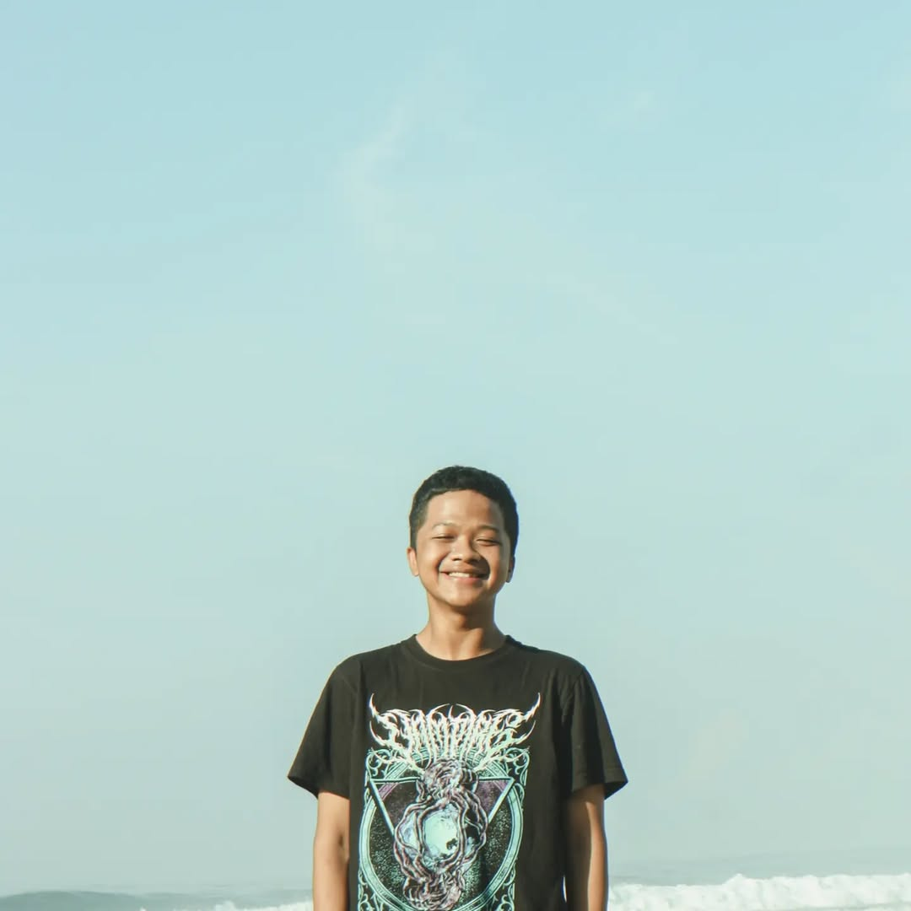

System.out.println("Halo, Dunia!");
> _

Mahasiswa STMIK PPKIA PRADNYA PARAMITA Malang dengan pengalaman magang dan freelance di bidang UI/UX Design, Web Development, dan Mobile Development. Menguasai bahasa pemrograman seperti Python, Flutter, Kotlin, Django, dan Laravel, serta memiliki kemampuan dalam merancang antarmuka pengguna yang intuitif. Aktif sebagai freelancer dengan fokus pada pengembangan solusi digital yang kreatif dan efisien. Saya terbiasa bekerja secara mandiri, memenuhi tenggat waktu, dan berkomunikasi efektif.
Agustus 2022 - Sekarang
S1 Teknologi Informasi
Juni 2019 - Mei 2022
Jurusan Rekayasa Perangkat Lunak
Pengembangan website penyewaan kostum (Costume Rental) yang interaktif, memudahkan pelanggan dalam melihat katalog dan melakukan reservasi.
Web DevelopmentPlatform agensi perjalanan global. Bertanggung jawab atas pengembangan dan perancangan website yang menarik dan fungsional, serta migrasi deployment VPS.
Kunjungi WebPembuatan website portal layanan tour dan travel untuk destinasi wisata dengan antarmuka (UI/UX) yang responsif dan user-friendly.
Kunjungi WebSistem absensi siswa modern berbasis RFID/NFC. Arsitektur dibangun terintegrasi menggunakan framework Laravel untuk backend dan Flutter untuk aplikasi mobile.
Mobile & Web AppPenelitian dan komparasi model Hybrid Machine Learning (HML) melawan Suricata untuk sistem deteksi intrusi jaringan (Network Security).
Machine Learning & CyberSkrip otomatisasi menggunakan Python untuk melakukan ekstraksi (web scraping) data paket tour, mempermudah pengumpulan data untuk analisis lanjutan.
Python ScriptingJl. S. Supriadi, Kepuh gg 6, RT/RW: 10/05, Kel. Bandung Rejosari
Languages: Indonesia